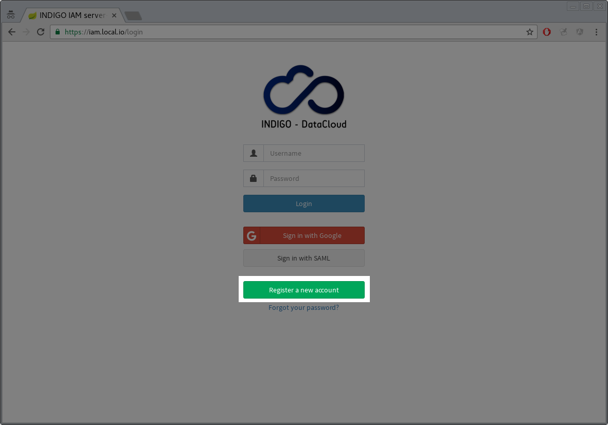
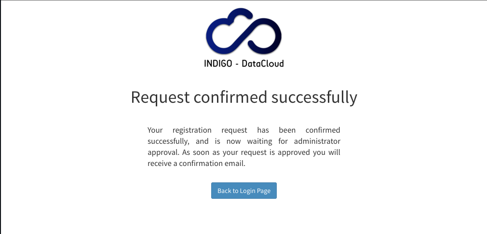
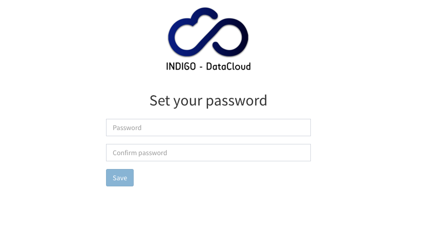

Joining an IAM-managed organization
IAM provides a registration service that allows to have managed enrollment for the organization under control. This mean that access to the organization is only granted after explicit approval by a IAM administrator for the organization.
Submitting a registration request
Users can submit a registration request from the IAM login page in two ways:
- By clicking the Register a new account button:

- By attempting a login with an external authentication provider such as Google or a configured SAML IdP: in this case if the external authentication succeeds and the authenticated user is not registered in the IAM the user is taken to the registration form to confirm the registration requests.

All the fields in the registration form are mandatory. The notes field can used to include extra information targeted at IAM administrators to clarify the reasons behind a registration request.
Confirming a registration request
If the submission ends successfully, an email verification link is sent to the user email address with a request to confirm his registration request.

Once the request is confirmed, IAM administrators are notified with an email.
Choosing a password
Once the submitteed request is approved by an IAM administrator, an email is sent to the user with a reset password link. This URL points to page where the user can choose a password for the IAM account.

Once the password is set, users can login to the IAM using the username chosen at registration time and the password.